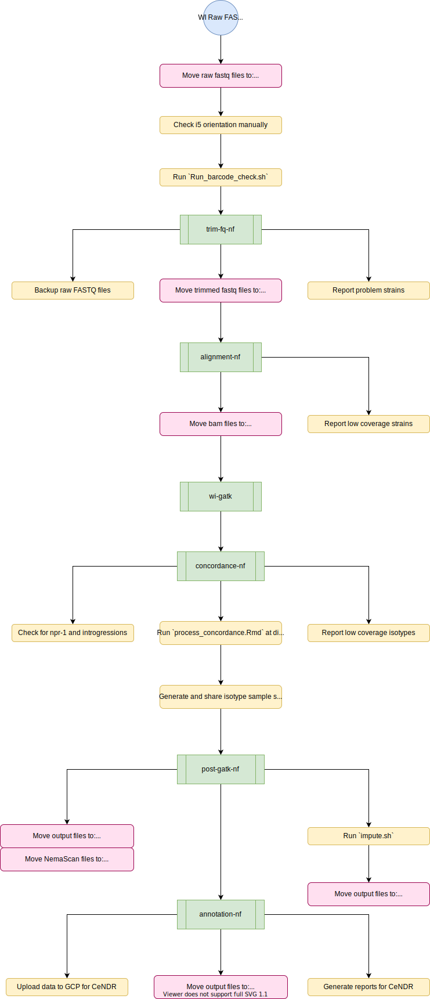

Pipeline Overview¶
An overview of the sequencing pipelines is shown below. Wild isolate data are processed by multiple pipelines. NIL/RIL sequence data are only processed by one pipeline.
Wild isolate sequencing¶
Note
The full protocol (in development) can be found here
